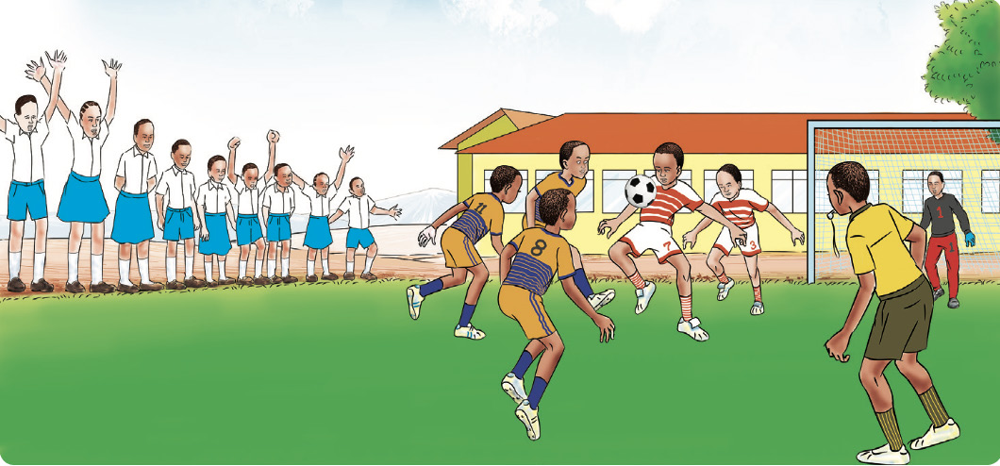

Exercise 1
1. Maria ate rice and meat last Monday. Was this a balanced meal? Explain.
2. Plan a balanced meal for a sick person using foods available at home. Give reasons for including those types of foods in the meal.
3. Explain the differences in dietary needs between a child and a manual worker.
4. What happens if you do not eat a balanced diet?
5. Why are body-building and protective foods important for a sick person?
Physical exercises
Physical exercises are important for keeping the body healthy. Physical exercises include playing football, running, jumping and walking. Figure 11 shows pupils doing physical exercises.
